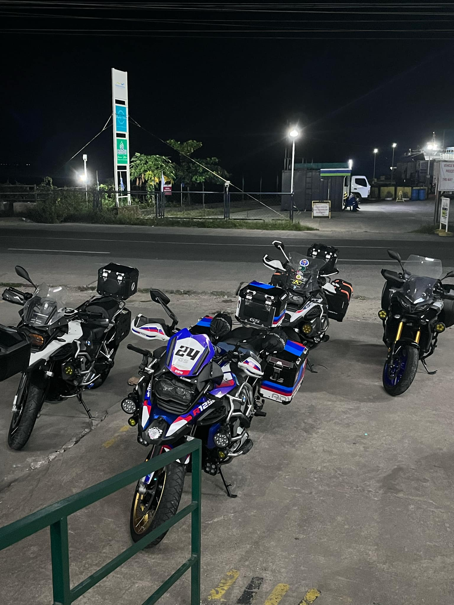
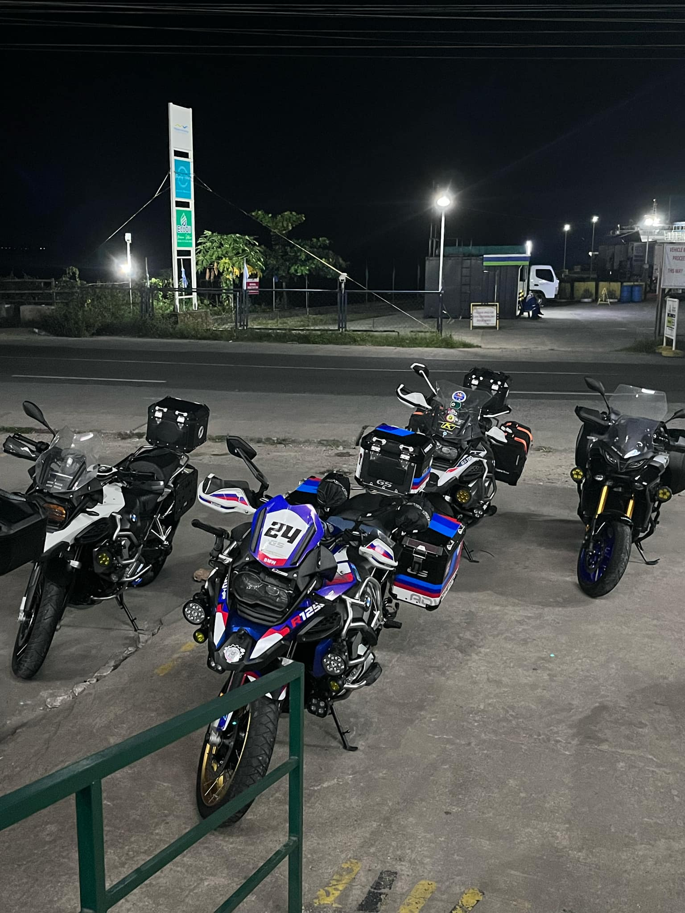

In my time as a student, I’ve had a meaningful and practical experience through a short period of time part time job as a gym instructor assistant where I assisted in fitness training and client management. I also had a great experience traveling by motorcycle from Luzon to Visayas with my family, which helped me develop a greater sense of adventure and adaptability. In terms of web management, I also gained experiences in creating effective and user-friendly websites. Although I cannot guarantee that I am perfect in it, I am capable and willing to learn. My goal is to make useful and visually-appealing websites that can perform through various devices. I still have a lot to learn and I can’t wait to show my greatest potential the moment I worked hard.
 
